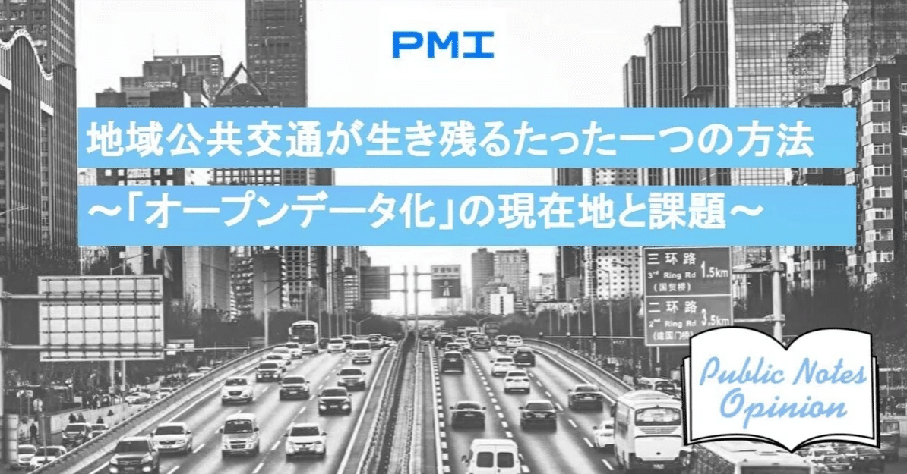

第２章 ラストワンマイルサービスも含め「オープンデータ化」を徹底すべき理由 ～“潜在需要”獲得と無限の可能性～
第一章では、地方部のラストワンマイルサービスに対してまで、オープンデータ化を求めるべきなのかという問題提起をしました。
結論から言えば、そうしたラストワンマイルサービスも含めて、というよりそうしたラストワンマイルサービスこそ、オープンデータ化させるべきと考えます。山の中に住む少数の高齢者の通院と買物のためだけに運行するコミュニティバスにおいても、です。
何故か。
そうしたサービスがオープンデータ化せず、限られた関係者の利用と議論に留まる限り、その地域公共交通に未来は無いからです。
地域公共交通の潜在需要
公共交通の需要には、現在のサービスが対応している顕在需要と、マーケティングを工夫したり、サービスを微修正したりすることで今後拾える潜在需要があります。
顕在需要の多くは、特に地方部では通学・通勤や通院の需要になります。
一方、特に激しく進行する地方部の少子化の影響を受ける通学需要はもちろん、地方部の人口全体が縮小傾向にある以上、目の前にある公共交通を自然と使ってくれている通勤や通院の需要を劇的に増加に転じさせることは極めて困難です。
地域公共交通の潜在需要は、公共交通が微修正すれば対応できるが、他の手段の方が便利なので使われていない、という需要です。
他の手段の方が便利ならそのままでいいじゃないか、と思われるかもしれませんが、他の手段が高コストで、公共交通が対応できるなら使いたいという需要が意外に少なくありません。
例えば、地方部の多くの病院、学校、ホテルは施設が自ら送迎バスを運行しています。しかし、ほとんどのケースは、公共交通が不便なので、利用者のために仕方なく運行している、というケースです。地方部では学校の送迎に自家用車が使われるケースも多く、朝夕になると学校の門の前で大渋滞が発生するという問題を学校関係者から聞くことも多いです。送迎にあたる家族の負担もあります。
このように公共交通が不便なことによる地域の様々な分野が支払っているコストがあり、地域公共交通がこの需要に対応するためにオープンデータ化が必要なのです。
ラストワンマイルの地域公共交通をオープンデータ化することで見える未来
公共交通のオープンデータ化の一番の効果は、こうした潜在需要を引き出す、すなわち「この路線バスとこの乗合タクシーを乗り継いだら、自家用車で送迎しなくても学校に通えるんじゃないか？」と地域住民に気づかせ利用を促したり、地域住民の声を地域公共交通の運行状況やルートに反映させたりすることができる可能性があることです。
そのため、国土交通省は、地域公共交通の協議をなるべく分野横断で行うように、福祉や教育などの交通分野以外の関係者も参画させるように必死に旗を振っています。しかし実態として、これらの関係者が地域公共交通の協議に参加するだけになっている状況を数多く見てきました。
何故こうなってしまうのでしょうか。
それは、情報がなく、意見が言えないからです。
地域の路線バス会社のバスマップと時刻表を広げ、複数の自治体のHPをザッピングしながらコミュニティバスや乗合タクシーのサービス内容を重ね合わせ、そこに鉄道や高速バスの路線も考慮に入れ、どこを調整したら何ができるかを考えるというのはすさまじい労力が要ります。
もちろん、地域の公共交通情報をわかりやすく紹介するHPやバスマップの作成には様々な地域が精力的に取り組んでいます。
しかし、情報というのはその受け手によって欲しいものが変わります。どこかの誰か、という潜在需要のためにあらゆるニーズを想定し、膨大な情報を収集・整理し、様々な形で発信していくにはどうすればいいのでしょうか。
それを最も低コストで実現する手段がオープンデータ化なのです。
データをオープンにしない限り、乗る人間も議論する人間も限定されます。限られた人間が乗り、限られた人間で議論して、限られた人間用に設定され、そして誰もいなくなる。
オープンデータ化を進めなければこのような未来が訪れるのが目に見えています。
「オープンデータ化してどういう効果があるの？」「わかりません」という回答の意味
オープンデータ化を推進しようとすると、必ず聞かれるのが「オープンデータ化してどういう効果があるの？」という質問です。
そして、真に誠実に回答すると答えはひとつになります。
「わかりません」。
オープンデータ化してどのような利用者が増えるのか、どのようなアプリが開発されるのか、とかよく問われるのですが、これらが既にわかっているなら、「オープン」である必要がそもそも無いのです。
その既知の想定ターゲット層には、既に個別にデータが提供されているはずなのです。
オープンデータ化というのは、どこかの誰かが活用してくれるかもしれない、誰かが意見を言ってくれるかもしれない、という「わからない」可能性に扉を開くものです。だから想定効果も「わからない」ということになります。
逆に言うと、「わからない／把握できない」潜在需要を獲得できる唯一の手段が「オープン」であり、「わからない」ことにこそ価値があるのだと思います。
費用対効果という話もよくされますが、オープンデータに関していえば、分母であるコストは明確である一方で、分子はまさに可能性でしか無い以上、費用対効果が「N/A」になる可能性もありますが、「∞」になる可能性だってあるはずです。
次章では、公共交通情報にとどまらないオープンデータ化について触れたいと思います。
第１章 Googleに載らないものは存在しないと同義 ～進む“公共交通のオープンデータ化”と残された課題～第２章 ラストワンマイルサービスも含め「オープンデータ化」を徹底すべき理由 ～“潜在需要”獲得と無限の可能性～第３章 あらゆる情報をオープンデータ化すべき理由 ～“常に最適化される地域の公共交通”も実現可能に～第４章 無限の可能性を生む未来のために ～オープンデータ化の推進とデータリテラシーの両立を～第５章 公共交通のオープンデータを「仕組み化」した山形県 ～先進的な取り組みと見えてきた課題～
執筆者：酒井達朗1984年愛知県生まれ。国土交通省に入省し、都市計画、国際航空、道路法制等を担当。米仏への留学後、2017年から地域公共交通政策担当の課長補佐として、MaaS導入初期の方針策定や地域交通に対する独占禁止法の適用除外規定の策定等に携わる。2019年より山形県総合交通政策課長、2021年より現在は同県企画調整課長。公共政策学修士（東京大学）、Master of Arts in Law and Diplomacy(Tufts大学)、経済学博士（埼玉大学）。https://note.com/n_shirokitsune/※本稿は個人的見解であり、所属する組織とは関係ありません。